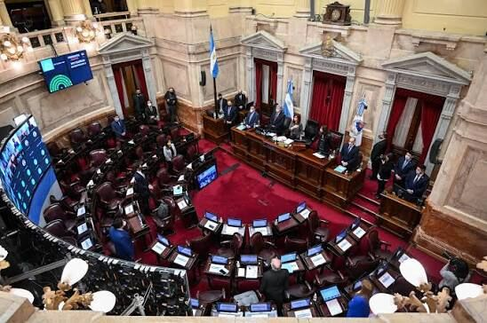
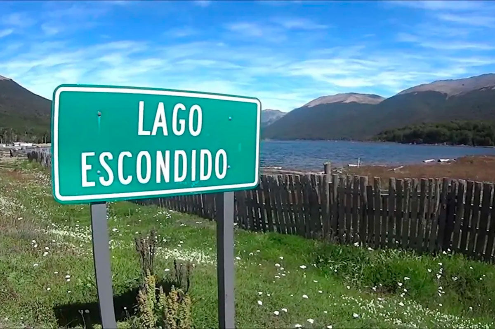

巴塔哥尼亚成为向外国人出售土地之争的焦点
一部难以落地的法律的反复拉锯：政府在参议院辩论前几小时撤回了土地章节，但法案其余部分依然存在。

政治 — GLOBALpatagonia 报道
一部难以落地的法律的反复拉锯
2026年8月6日将被视为国会又一轮拉锯战。执政联盟带着通过这部名为“私有财产不可侵犯法”（实则具有误导性）的法律的意图来到参议院——政府自己此前已四次推迟这项立法。然而，在辩论开始前不到24小时，安全部长兼执政党团领袖帕特里西娅·布利里奇撤回了其中最具争议的章节：旨在放宽外国人购买战略性土地限制的《土地法》修订内容。
该法案最初由放松管制部部长费德里科·斯图尔森格提出，主张取消外国自然人和法人购买农村土地的一切限制。面对日益增长的社会反对和参议院票数不足，政府在最后时刻尝试妥协：将上限从15%提高到25%的国土面积，同时保留各省和国家政府对每笔交易的审批权。但即便如此仍未奏效。
支持的版图：谁支持米莱，谁在抵制

“自由前进党”自身拥有21名参议员的基础票。该党希望再争取到“共和主张”党的3票，以及激进公民联盟10票中至少7票，再加上合作省级政党的立法者。执政联盟需要37票（半数加一）才能达到法定人数并通过该法案。目前尚未凑齐。
| 参议员 | 省份/党团 | 立场 |
|---|---|---|
| 弗拉维娅·拉永 | 萨尔塔 | 支持执政联盟 |
| 胡列塔·科罗萨 | 内乌肯 | 支持执政联盟 |
| 贝亚特丽斯·阿维拉 | 图库曼 | 支持执政联盟 |
| 卡洛斯·奥马尔·阿尔塞 | 米西奥内斯 | 未表态 |
| 索尼娅·罗哈斯·德库特 | 米西奥内斯 | 未表态 |
| 何塞·玛丽亚·卡兰比亚 | 圣克鲁斯 | 未表态 |
| 纳塔利娅·加达诺 | 圣克鲁斯 | 未表态 |
| 马克西米利亚诺·阿瓦德 | 布宜诺斯艾利斯（激进党） | 反对 |
| 亚历杭德拉·维戈 | 科尔多瓦 | 反对 |
| 正义党党团（何塞·马扬斯） | 21名参议员 | 反对 |
| “联邦信念”党团 | 3名参议员 | 反对 |
在政府施压的“未表态者”中，包括米西奥内斯省的两名参议员——他们卷入了一场党内纷争，帕萨拉夸省长呼吁反对，而党内领袖罗维拉则倒向总统府；还有圣克鲁斯省听命于克劳迪奥·维达尔省长的两名参议员。
说“不”的正义党……以及在谈判的正义党
由何塞·马扬斯领导的正义党团（21名参议员）坚决反对，与之一同反对的还有“联邦信念”党团（3名参议员）、布宜诺斯艾利斯激进党人马克西米利亚诺·阿瓦德，以及科尔多瓦的亚历杭德拉·维戈。
但巴塔哥尼亚地区值得关注的是内乌肯省的立场。内乌肯参议员胡列塔·科罗萨出现在支持执政联盟的名单上。与此同时，里奥内格罗省省长阿尔韦托·韦雷蒂尔内克——虽属正义党人但是米莱的战略盟友——则保持低调，尽管该省是最容易受到土地外国化影响的地区之一，乔·刘易斯在“隐湖”（Lago Escondido）的案例就是例子。
相反，拉里奥哈省省长里卡多·金特拉态度强硬：他预告正义党可能会对米莱的政策“收归国有、征收并收回其认为必要的一切”。
巴塔哥尼亚能为外国资本提供什么？
巴塔哥尼亚在这场争夺战中至关重要。这是一片极受觊觎的土地，尤其是在国外。它的土地究竟能提供什么？
数量惊人的土地与水资源
据布宜诺斯艾利斯大学（UBA）土地观察站的数据，全国大约5%的农村土地（1300万公顷）已落入外国人手中。但在巴塔哥尼亚，这一数字要惊人得多。在拉卡尔区（内乌肯省），54%的土地属于外国人所有。“隐湖”及英国大亨乔·刘易斯名下的1.2万公顷土地，只是冰山一角。

人工智能超级项目
2025年10月，OpenAI签署了一份意向书，拟参与“阿根廷星际之门”（Stargate Argentina）项目——一个位于巴塔哥尼亚的人工智能超级数据中心，预计投资高达250亿美元。该项目将与Sur Energy公司合作开发，需要大片土地以及廉价能源供给。该地区较低的气温可降低服务器制冷成本，这是此类项目的关键因素。
巴塔哥尼亚集中了：淡水资源（湖泊、冰川和地下含水层）、原生森林（目前受到该法案试图废除的法律保护）、矿产资源（锂矿等项目）以及能源（风能和水电潜力）。
里奥内格罗省的正义党参议员警告称，该项目“损害国家发展”，而且在火灾方面，“会让投机行为和房地产生意在我们省内滋生”。
蓄意纵火：火灾背后的生意
该法案中最严重的问题之一——且未被撤回——是对《国家火灾管理法》（第26.815号法）的修改。
现行法律怎么规定？
目前，该法律规定，在森林、湿地和草原发生火灾（无论是蓄意还是意外）后的30至60年内，禁止改变土地用途、出售或分割受灾地块。
政府提议什么？
“私有财产不可侵犯”法案废除了这些限制。多个组织警告称，取消这一规定“可能导致蓄意纵火事件增加”。
巴塔哥尼亚已经发生的事
这并非空穴来风的威胁。2026年夏季，巴塔哥尼亚遭遇了近六十年来最严重的森林大火，超过6万公顷的安第斯-巴塔哥尼亚森林被毁。在普埃洛湖和帕特里亚达港沿岸，火灾之后的土地用途变更无一例外全部用于旅游开发。
笼罩在这些大火烟雾之上、挥之不去的问题是：这些火灾究竟有多少真的是“意外”？
“私有财产不可侵犯”对巴塔哥尼亚意味着什么？
尽管土地章节已被撤回，该法案仍保留了直接影响巴塔哥尼亚地区、尤其是原住民社区世代主张的土地的其他条款：快速驱逐（简化程序）、《火灾管理法》改革（取消火灾后禁止改变土地用途的规定），以及征收（对国家征收设定新的限制性条件）。
总统府发言人阿德里安·拉维尔表示，现行法律“将外国人购买土地行为定为犯罪”。布宜诺斯艾利斯大学土地观察站则称这种说法“荒谬至极”，并警告这是“一部为美国资本量身定制的法律”。
一场没有尽头的拉锯战
政府已经宣布，未来将继续争取票数以重新提出该法案。巴塔哥尼亚——土地外国化程度告急、坐拥战略资源、并对OpenAI这样的科技超级项目极具吸引力——仍是各方瞄准的目标。
这一天最核心的政治事实是：即便经历了四次推迟和一次最后时刻的让步，执政联盟依然未能凑够票数。8月6日的社会动员、正义党省长们的反对，以及执政联盟自身盟友的犹豫，共同——至少暂时——遏制住了土地外国化的攻势。
但争论并未结束。萦绕在整个巴塔哥尼亚上空的问题是：为了把我们最好的土地推向全球市场，米莱政府究竟愿意走多远？
消息来源：Página/12、Infobae、Bloomberg Línea、Patagonia Press、Parlamentario、Izquierda Web、Conclusion.com.ar。